019-nginx升级https
1. 选购证书
这里从阿里云-SSL证书上选购个免费的证书
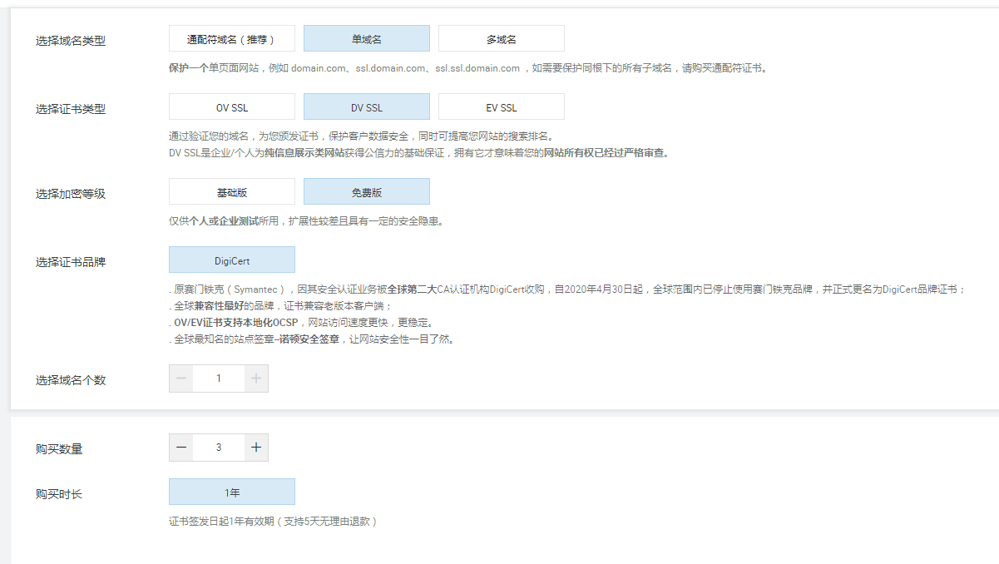
推荐购买上面的通配符域名，比如买了后，那么所有的二级域名都可以享受https服务
购买后就可以去阿里云的证书控制台进行证书申请
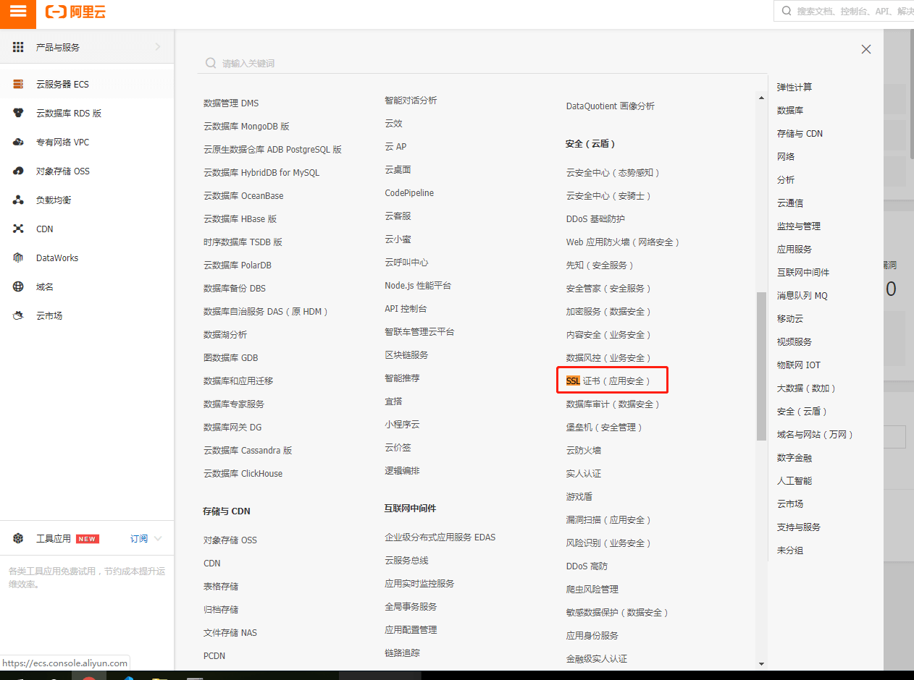
在控制台可以看到购买的证书，点击进行申请
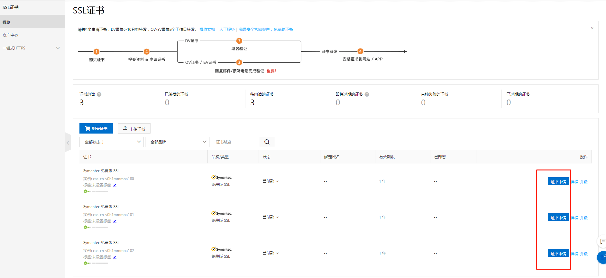
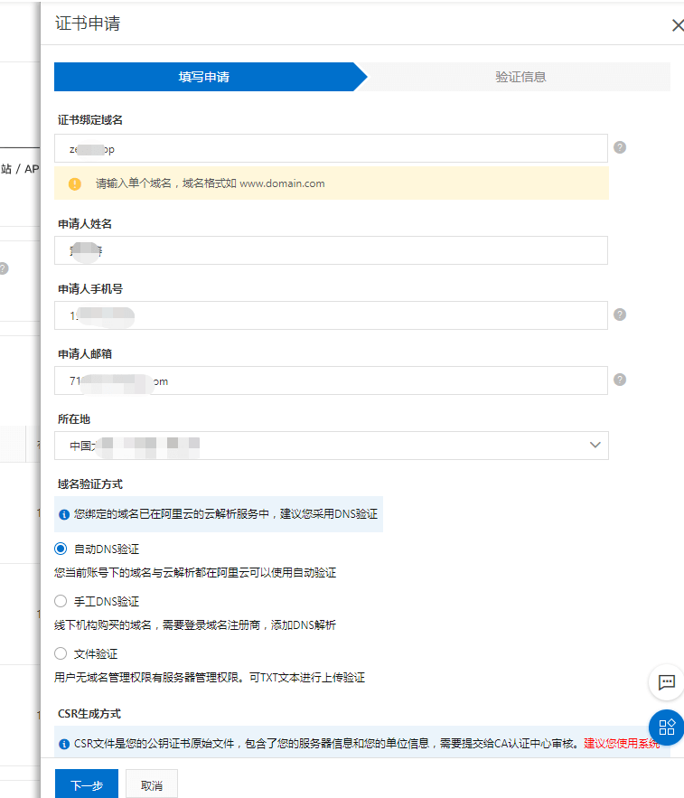
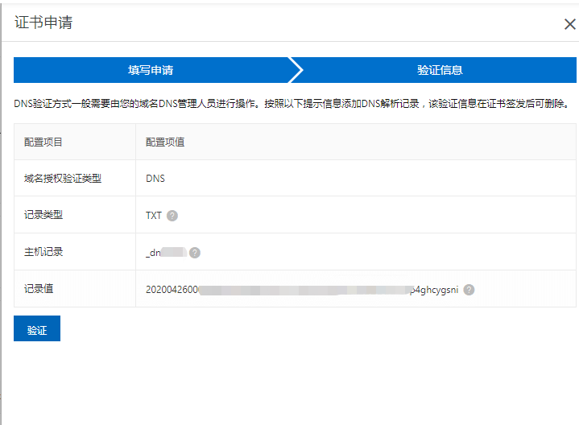
等待审核通过
审核通过后，就可以下载证书
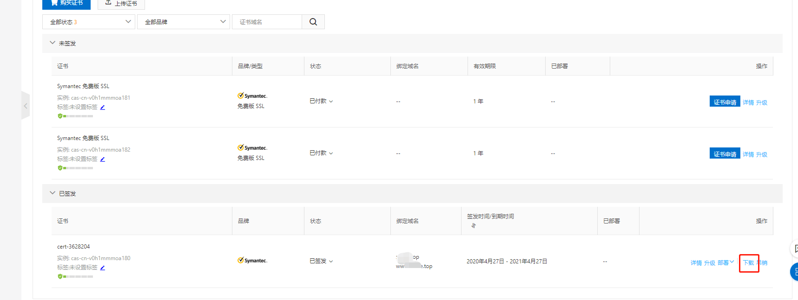
根据自己服务器选择版本下载，我们用的是nginx
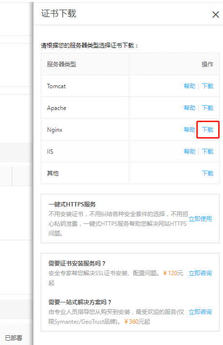
下载完解压后可以看到是2个文件
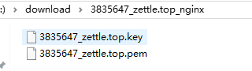
2. 安装证书
默认下，nginx的安装目录是/usr/local/nginx。配置文件位置在/usr/local/nginx/conf。
在/usr/local/nginx/conf新建cert文件夹，并把解压的2个文件放进去
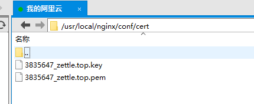
修改nginx的配置文件
server {
listen 443 ssl; #SSL协议访问端口号为443。此处如未添加ssl，可能会造成Nginx无法启动
server_name localhost; #将localhost修改为您证书绑定的域名，例如：www.example.com
ssl_certificate cert/3835647_zettle.top.pem; #将domain name.pem替换成您证书的文件名。
ssl_certificate_key cert/3835647_zettle.top.key; #将domain name.key替换成您证书的密钥文件名
ssl_session_cache shared:SSL:1m;
ssl_session_timeout 5m;
ssl_ciphers ECDHE-RSA-AES128-GCM-SHA256:ECDHE:ECDH:AES:HIGH:!NULL:!aNULL:!MD5:!ADH:!RC4; #使用此加密套件。
ssl_protocols TLSv1 TLSv1.1 TLSv1.2; #使用该协议进行配置。
ssl_prefer_server_ciphers on;
location / {
root /root/web/yui;
index index.html index.htm;
}
}
2.1 错误1
执行检查nginx -t。提示nginx: [emerg] the "ssl" parameter requires ngx_http_ssl_module in /usr/local/nginx/conf/nginx.conf:114
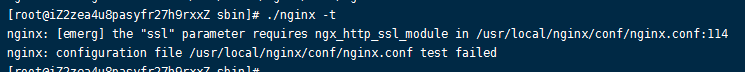
这是nginx之前安装的时候没有开启ssl功能，查看是否开启命令nginx -V
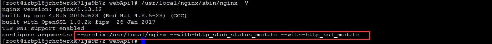
看不到红框的说明是没有安装过
回到原先安装nginx从网上下载好解压的目录。如果已经删除掉可以重新下载对应版本，查看nginx版本命令nginx -V
- 原nginx解压路径：
/root/nginx-1.16.1 - 服务器nginx路径：
/usr/local/nginx
首先进到原nginx路径/root/nginx-1.16.1里面，执行命令
./configure --prefix=/usr/local/nginx --with-http_stub_status_module --with-http_ssl_module
make
备份好以前安装好的nginx：
cp /usr/local/nginx/sbin/nginx /usr/local/nginx/sbin/nginx.bak
把刚才编译好的nginx覆盖现有的，如果nginx启动着需要先停止，停止命令。
nginx -s stop
cp /root/nginx-1.16.1/objs/nginx /usr/local/nginx/sbin/
cd /usr/local/nginx/sbin
./nginx #启动
现在再看./nginx -V就能看到ssl信息了
启动完成就可以进行https访问了，如果浏览器一直请求不通，可能防火墙或者网络安全策略没开。阿里云的前往服务器安全组开下
3、把http都转为https上去
配置下nginx
server {
listen 80;
server_name localhost;
rewrite ^(.*)$ https://$host$1 permanent; #将所有http请求通过rewrite重定向到https。
}